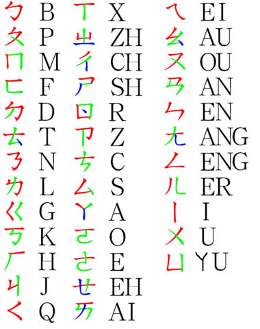

Chinese alphabet is another method that is often use in Taiwan, Taiwan children need to learn this when they are in elementry school, and is it also a type of typing keyboard in Taiwan. It is harder than the Pinyin because it is not English, it is Chinese. So if you already know English I suggest you to learn Pinyin, but if you want to learn Chinese Alphabet, you can come to the Alphabet page to learn.
